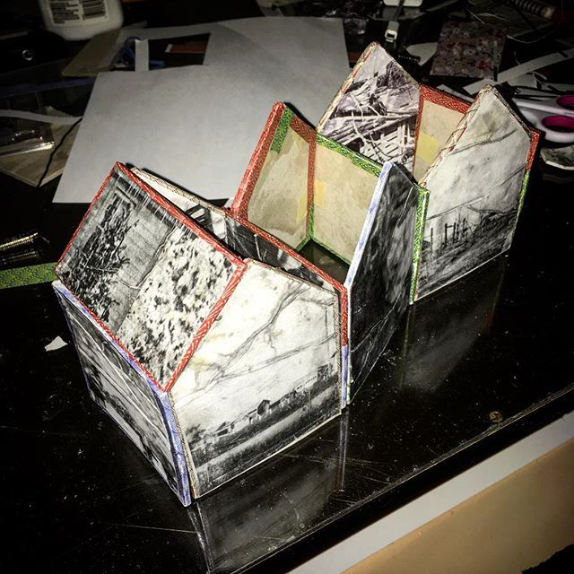
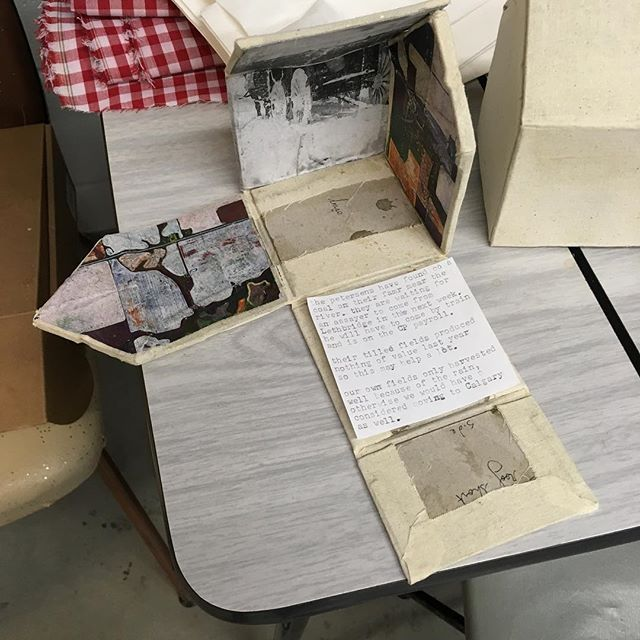
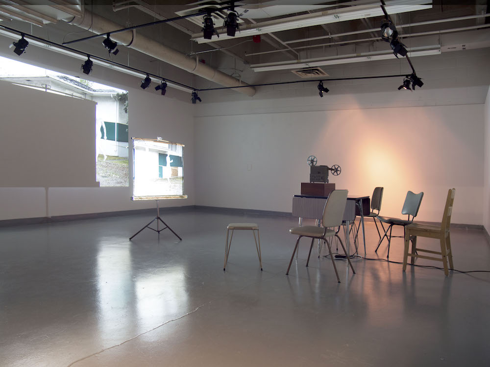
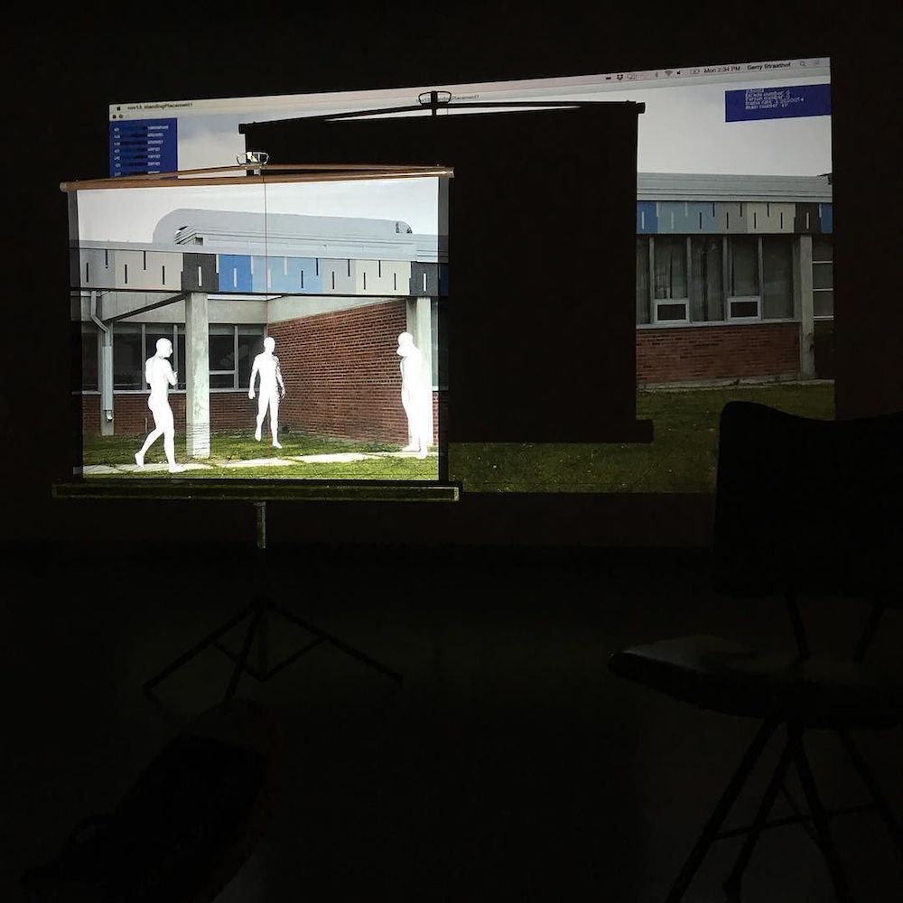

Bankhead: Revisited is an artwork exploring the sharing of my curiosity while exploring an abandoned townsite with the viewer. It comprises several grouped prints made from 3d scans on the site, and a moving light source creating a shadow which implies the path of curiosity.
 Walls: Retaining Memory is a project that explores the concept that walls collect the memories of experiences that occur around them, presented in the form of small house-shaped 'books' with stories enfolded within them, as well as walls that can be reconstructed into houses with memories.
 Reduced to a Rumor is a recognition that we understand there were people who once lived or worked in certain locations, but we do not know, or need to know, who those people were. Presented in an installation composed of a specific arrangement of furniture, screen and constructed digital installation that mimics mannequins devolving into shapes on a landscape, Reduced to a Rumor explores the fading of specifics of identity from detail, to rumor and folklore.